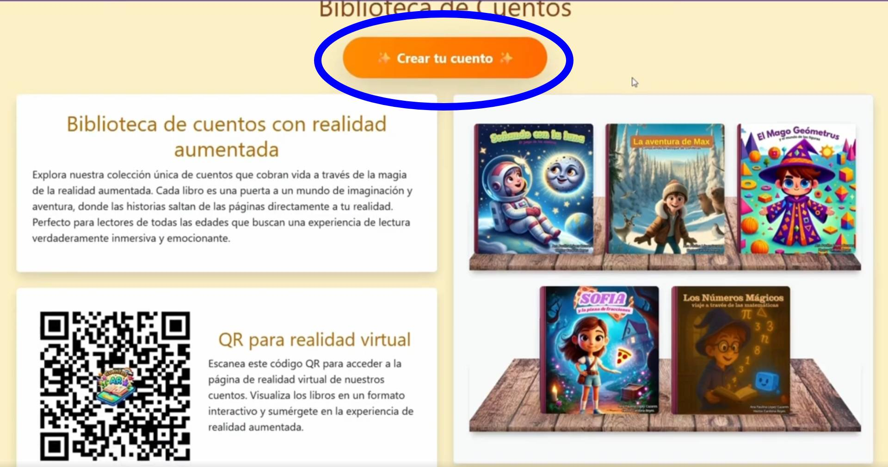
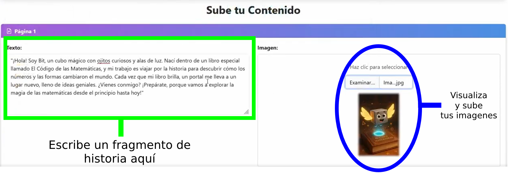
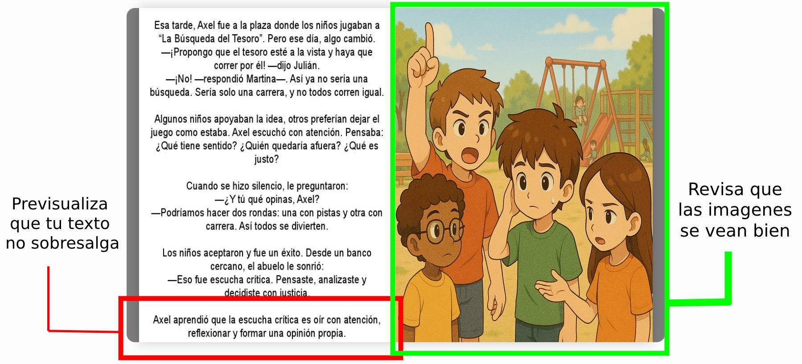

📖 Manual de usuario
Guía para crear cuentos
¡Crea cuentos interactivos para niños con nuestra guía paso a paso!
"Explora los pasos", aquí encontratas:
- Análisis: Elige tu público, un tema de aprendizaje y una idea para la historia.
- Diseño: Escribe el cuento, diseña imágenes y prepara modelos 3D.
- Implementación: Sube tu cuento a la plataforma "Biblioteca de Cuentos".
Explora los pasos para crear tu cuento
Antes de escribir, necesitas definir un tema y un personaje principal de la historia
- Consejo: Revisa el currículo de la SEP para temas por grado.
- Consejo: Inventa un personaje divertido, como un mago o animal.
Piensa en el personaje protagonista de la obra y una problemática o aventura que tiene que pasar para abarcar tu tema elegido en la historia.
Aquí aprenderás a escribir tu cuento, diseñar sus imágenes y preparar modelos 3D.
Escribe el cuento
Estructura tu cuento con una introducción, un desarrollo y un final.
Divide la historia en partes cortas, una por página, con un máximo de 300 caracteres por página.
Puedes seguir la siguiente estructura:
- Introducción: Presenta al protagonista y su mundo.
- Desarrollo: Describe un reto o aventura ligado al tema de aprendizaje.
- Final: Resuelve el problema y refuerza el aprendizaje.
- Consejo: Usa herramientas de IA como Grok o ChatGPT para ideas (ej. "Escribe un cuento sobre figuras geométricas para 4º grado").
Crea las imágenes
Diseña una imagen para cada página y una para la portada, en formato .jpg. Puedes dibujar y colorear a mano, escanear tus dibujos, o usar herramientas de inteligencia artificial para crear imágenes rápidamente.
- Opciones:
- Dibuja a mano y escanea o fotografía tus dibujos.
- Usa herramientas de IA como Canva, DALL-E o Grok (Mayor detalle en la guia completa).
- Portada: Crea una imagen cuadrada para la portada que incluya el título del cuento.
- Consejo: Convierte imágenes a .jpg gratis en iloveimg.com.
Prepara modelos 3D (opcional)
Los modelos 3D para realidad aumentada son opcionales.
- Opciones:
- Crea modelos en herramientas como Blender.
- Descarga modelos gratis o compra en sitios como Sketchfab o Unity Store.
- Consejo: Asegúrate de que el modelo coincida con la imagen y el texto.
En esta sección aprenderás cómo subir tu cuento a la plataforma "Biblioteca de Cuentos" para que los niños puedan disfrutarlo.
- Consejo: Asegúrate de que el texto no supere 300 caracteres por página.
- Consejo: Revisa que el texto y las imágenes estén alineados.
Cosas que necesitas
Antes de comenzar, asegúrate de tener lo siguiente listo:
- El texto de tu cuento ya escrito y dividido en páginas. Por ejemplo, si tu cuento tiene 5 páginas, debes tener el texto de cada página preparado.
- Las imágenes generadas para tu cuento, incluyendo:
- Una imagen para la portada.
- Una imagen por cada página del cuento.
Pasos para cargar tu cuento
-
Accede a la plataforma: Ingresa a la "Biblioteca de Cuentos" y haz clic en el botón "Crear tu cuento".

-
Ingresa los datos básicos:
- Título del cuento: Escribe el título de tu cuento, por ejemplo, "El Mago Geómetrus y el Mundo de las Figuras".
- Nombre del autor: Ingresa tu nombre o un seudónimo.
- Portada del cuento: Sube la imagen de la portada usando el botón de carga ("Examinar").

-
Sube el texto y las imágenes de cada página:
- En la sección "Sube tu Contenido", en la "Página 1".
- Escribe el texto de la página 1 en el campo "Texto".
- Sube la imagen de la página 1 en el campo "Imagen".
- Repite este proceso para todas las páginas del cuento. Para añadir paginas ve al apartado Funcion de botones en esta guia.

-
Revisa el contenido:
Asegúrate de que el texto y las imágenes estén correctamente subidos. Puedes previsualizar el cuento haciendo clic en "Previsualizar Cuento".
Esto abrirá una nueva pestaña donde podrás ver cómo quedará tu cuento en formato flipbook.
Si necesitas hacer cambios, puedes volver a la página de edición y realizar las modificaciones necesarias.
NOTA: Solo pudes previsualizar si todos los campos (De informacion como de cada pagina) estan llenos.

-
Funciones de botones:
En la parte inferior de la sección "Sube tu Contenido", encontrarás los siguientes botones:
- Añadir otra sección: Se agregará una nueva página, donde podrás subir otro fragmento del texto junto con su imagen.
- Eliminar última sección: Se eliminará la última sección añadida.
- Guardar Cuento: Se guardarán los datos introducidos (autor, nombre, imágenes y texto) y se redirigirá a la página de biblioteca virtual donde podrás ver tu cuento añadido a la biblioteca.
- Previsualizar Cuento: Se abrirá una nueva pestaña donde aparecerán las imágenes y el texto que has introducido hasta el momento para verlo en un flipbook.
Recuerda que puedes agregar o eliminar páginas según sea necesario.
Una vez completados estos pasos, habrás previsualizado y subido correctamente tu cuento a la plataforma.
Para más información
Consulta nuestro video tutorial en YouTube para una guía visual: